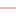

<!doctype html>
<html lang="en">
    <head>
        <meta charset="utf-8">
        <meta http-equiv="X-UA-Compatible" content="IE=edge">
        <meta name="viewport" content="initial-scale=1,user-scalable=no,maximum-scale=1,width=device-width">
        <meta name="mobile-web-app-capable" content="yes">
        <meta name="apple-mobile-web-app-capable" content="yes">
        <link rel="stylesheet" href="css/leaflet.css">
        <link rel="stylesheet" href="css/L.Control.Layers.Tree.css">
        <link rel="stylesheet" href="css/qgis2web.css">
        <link rel="stylesheet" href="css/fontawesome-all.min.css">
        <link rel="stylesheet" href="css/leaflet.photon.css">
        <style>
        html, body, #map {
            width: 100%;
            height: 100%;
            padding: 0;
            margin: 0;
        }
        </style>
        <title>Visor Suiza</title>
    </head>
    <body>
        <div id="map">
        </div>
        <script src="js/qgis2web_expressions.js"></script>
        <script src="js/leaflet.js"></script>
        <script src="js/L.Control.Layers.Tree.min.js"></script>
        <script src="js/leaflet.rotatedMarker.js"></script>
        <script src="js/leaflet.pattern.js"></script>
        <script src="js/leaflet-hash.js"></script>
        <script src="js/Autolinker.min.js"></script>
        <script src="js/rbush.min.js"></script>
        <script src="js/labelgun.min.js"></script>
        <script src="js/labels.js"></script>
        <script src="js/leaflet.photon.js"></script>
        <script src="data/LmitedeSuiza_0.js"></script>
        <script src="data/Cuerposdeagua_1.js"></script>
        <script src="data/Rutas_2.js"></script>
        <script src="data/Ferrocarriles_3.js"></script>
        <script src="data/BernaCapitalSuiza_4.js"></script>
        <script>
        var map = L.map('map', {
            zoomControl:false, maxZoom:28, minZoom:1
        }).fitBounds([[45.317918043367435,3.3592365547000322],[48.05761868648839,12.374769687316634]]);
        var hash = new L.Hash(map);
        map.attributionControl.setPrefix('<a href="https://github.com/qgis2web/qgis2web" target="_blank">qgis2web</a> &middot; <a href="https://leafletjs.com" title="A JS library for interactive maps">Leaflet</a> &middot; <a href="https://qgis.org">QGIS</a>');
        var autolinker = new Autolinker({truncate: {length: 30, location: 'smart'}});
        // remove popup's row if "visible-with-data"
        function removeEmptyRowsFromPopupContent(content, feature) {
         var tempDiv = document.createElement('div');
         tempDiv.innerHTML = content;
         var rows = tempDiv.querySelectorAll('tr');
         for (var i = 0; i < rows.length; i++) {
             var td = rows[i].querySelector('td.visible-with-data');
             var key = td ? td.id : '';
             if (td && td.classList.contains('visible-with-data') && feature.properties[key] == null) {
                 rows[i].parentNode.removeChild(rows[i]);
             }
         }
         return tempDiv.innerHTML;
        }
        // modify popup if contains media
        function addClassToPopupIfMedia(content, popup) {
            var tempDiv = document.createElement('div');
            tempDiv.innerHTML = content;
            var imgTd = tempDiv.querySelector('td img');
            if (imgTd) {
                var src = imgTd.getAttribute('src');
                if (/\.(jpg|jpeg|png|gif|bmp|webp|avif)$/i.test(src)) {
                    popup._contentNode.classList.add('media');
                    var img = popup._contentNode.querySelector('td img');
                    if (img) {
                        // If already loaded (cache), update immediately
                        if (img.complete && img.naturalHeight > 0) {
                            popup.update();
                        } else {
                            img.addEventListener('load', function() {
                                popup.update();
                            });
                            img.addEventListener('error', function() {
                                popup.update();
                            });
                        }
                    }
                } else if (/\.(mp3|wav|ogg|aac)$/i.test(src)) {
                    var audio = document.createElement('audio');
                    audio.controls = true;
                    audio.src = src;
                    imgTd.parentNode.replaceChild(audio, imgTd);
                    popup._contentNode.classList.add('media');
                    setTimeout(function() {
                        popup.setContent(tempDiv.innerHTML);
                        popup.update();
                    }, 10);
                } else if (/\.(mp4|webm|ogg|mov)$/i.test(src)) {
                    var video = document.createElement('video');
                    video.controls = true;
                    video.src = src;
                    video.style.width = "400px";
                    video.style.height = "300px";
                    video.style.maxHeight = "60vh";
                    video.style.maxWidth = "60vw";
                    imgTd.parentNode.replaceChild(video, imgTd);
                    popup._contentNode.classList.add('media');
                    // Aggiorna il popup quando il video carica i metadati
                    video.addEventListener('loadedmetadata', function() {
                        popup.update();
                    });
                    setTimeout(function() {
                        popup.setContent(tempDiv.innerHTML);
                        popup.update();
                    }, 10);
                } else {
                    popup._contentNode.classList.remove('media');
                }
            } else {
                popup._contentNode.classList.remove('media');
            }
        }
        var title = new L.Control({'position':'topright'});
        title.onAdd = function (map) {
            this._div = L.DomUtil.create('div', 'info');
            this.update();
            return this._div;
        };
        title.update = function () {
            this._div.innerHTML = '<h2>Visor Suiza</h2>';
        };
        title.addTo(map);
        var zoomControl = L.control.zoom({
            position: 'topleft'
        }).addTo(map);
        var bounds_group = new L.featureGroup([]);
        function setBounds() {
        }
        function pop_LmitedeSuiza_0(feature, layer) {
            var popupContent = '<table>\
                    <tr>\
                        <th scope="row">Nombre</th>\
                        <td>' + (feature.properties['name'] !== null ? autolinker.link(String(feature.properties['name']).replace(/'/g, '\'').toLocaleString()) : '') + '</td>\
                    </tr>\
                </table>';
            var content = removeEmptyRowsFromPopupContent(popupContent, feature);
			layer.on('popupopen', function(e) {
				addClassToPopupIfMedia(content, e.popup);
			});
			layer.bindPopup(content, { maxHeight: 400 });
        }

        function style_LmitedeSuiza_0_0() {
            return {
                pane: 'pane_LmitedeSuiza_0',
                opacity: 1,
                color: 'rgba(35,35,35,1.0)',
                dashArray: '',
                lineCap: 'butt',
                lineJoin: 'miter',
                weight: 1.0, 
                fill: true,
                fillOpacity: 1,
                fillColor: 'rgba(225,89,137,0.0)',
                interactive: true,
            }
        }
        map.createPane('pane_LmitedeSuiza_0');
        map.getPane('pane_LmitedeSuiza_0').style.zIndex = 400;
        map.getPane('pane_LmitedeSuiza_0').style['mix-blend-mode'] = 'normal';
        var layer_LmitedeSuiza_0 = new L.geoJson(json_LmitedeSuiza_0, {
            attribution: '',
            interactive: true,
            dataVar: 'json_LmitedeSuiza_0',
            layerName: 'layer_LmitedeSuiza_0',
            pane: 'pane_LmitedeSuiza_0',
            onEachFeature: pop_LmitedeSuiza_0,
            style: style_LmitedeSuiza_0_0,
        });
        bounds_group.addLayer(layer_LmitedeSuiza_0);
        map.addLayer(layer_LmitedeSuiza_0);
        function pop_Cuerposdeagua_1(feature, layer) {
            var popupContent = '<table>\
                    <tr>\
                        <th scope="row">Nombre</th>\
                        <td>' + (feature.properties['NAME'] !== null ? autolinker.link(String(feature.properties['NAME']).replace(/'/g, '\'').toLocaleString()) : '') + '</td>\
                    </tr>\
                    <tr>\
                        <th scope="row">Nombre e idioma</th>\
                        <td>' + (feature.properties['NAME_LANG'] !== null ? autolinker.link(String(feature.properties['NAME_LANG']).replace(/'/g, '\'').toLocaleString()) : '') + '</td>\
                    </tr>\
                    <tr>\
                        <th scope="row">Categoría de tamaño</th>\
                        <td>' + (feature.properties['GROESSTE_S'] !== null ? autolinker.link(String(feature.properties['GROESSTE_S']).replace(/'/g, '\'').toLocaleString()) : '') + '</td>\
                    </tr>\
                    <tr>\
                        <th scope="row">Altitud del espejo de agua</th>\
                        <td>' + (feature.properties['SEESPIEGEL'] !== null ? autolinker.link(String(feature.properties['SEESPIEGEL']).replace(/'/g, '\'').toLocaleString()) : '') + '</td>\
                    </tr>\
                    <tr>\
                        <th scope="row">Categoría de tamaño</th>\
                        <td>' + (feature.properties['SG'] !== null ? autolinker.link(String(feature.properties['SG']).replace(/'/g, '\'').toLocaleString()) : '') + '</td>\
                    </tr>\
                    <tr>\
                        <th scope="row">Tipo de objeto</th>\
                        <td>' + (feature.properties['OBJEKTART'] !== null ? autolinker.link(String(feature.properties['OBJEKTART']).replace(/'/g, '\'').toLocaleString()) : '') + '</td>\
                    </tr>\
                </table>';
            var content = removeEmptyRowsFromPopupContent(popupContent, feature);
			layer.on('popupopen', function(e) {
				addClassToPopupIfMedia(content, e.popup);
			});
			layer.bindPopup(content, { maxHeight: 400 });
        }

        function style_Cuerposdeagua_1_0() {
            return {
                pane: 'pane_Cuerposdeagua_1',
                opacity: 1,
                color: 'rgba(35,35,35,1.0)',
                dashArray: '',
                lineCap: 'butt',
                lineJoin: 'miter',
                weight: 1.0, 
                fill: true,
                fillOpacity: 1,
                fillColor: 'rgba(57,150,196,1.0)',
                interactive: true,
            }
        }
        map.createPane('pane_Cuerposdeagua_1');
        map.getPane('pane_Cuerposdeagua_1').style.zIndex = 401;
        map.getPane('pane_Cuerposdeagua_1').style['mix-blend-mode'] = 'normal';
        var layer_Cuerposdeagua_1 = new L.geoJson(json_Cuerposdeagua_1, {
            attribution: '',
            interactive: true,
            dataVar: 'json_Cuerposdeagua_1',
            layerName: 'layer_Cuerposdeagua_1',
            pane: 'pane_Cuerposdeagua_1',
            onEachFeature: pop_Cuerposdeagua_1,
            style: style_Cuerposdeagua_1_0,
        });
        bounds_group.addLayer(layer_Cuerposdeagua_1);
        map.addLayer(layer_Cuerposdeagua_1);
        function pop_Rutas_2(feature, layer) {
            var popupContent = '<table>\
                    <tr>\
                        <th scope="row">Número de ruta</th>\
                        <td>' + (feature.properties['ROUTEN_NR'] !== null ? autolinker.link(String(feature.properties['ROUTEN_NR']).replace(/'/g, '\'').toLocaleString()) : '') + '</td>\
                    </tr>\
                    <tr>\
                        <th scope="row">Tipo de estructura</th>\
                        <td>' + (feature.properties['KUNSTBAUTE'] !== null ? autolinker.link(String(feature.properties['KUNSTBAUTE']).replace(/'/g, '\'').toLocaleString()) : '') + '</td>\
                    </tr>\
                    <tr>\
                        <th scope="row">Tipo de pavimento</th>\
                        <td>' + (feature.properties['BELAGSART'] !== null ? autolinker.link(String(feature.properties['BELAGSART']).replace(/'/g, '\'').toLocaleString()) : '') + '</td>\
                    </tr>\
                    <tr>\
                        <th scope="row">En construcción</th>\
                        <td>' + (feature.properties['IM_BAU'] !== null ? autolinker.link(String(feature.properties['IM_BAU']).replace(/'/g, '\'').toLocaleString()) : '') + '</td>\
                    </tr>\
                    <tr>\
                        <th scope="row">Importancia vial </th>\
                        <td>' + (feature.properties['VRKBEDEUT'] !== null ? autolinker.link(String(feature.properties['VRKBEDEUT']).replace(/'/g, '\'').toLocaleString()) : '') + '</td>\
                    </tr>\
                    <tr>\
                        <th scope="row">Tipo de vía</th>\
                        <td>' + (feature.properties['OBJEKTART'] !== null ? autolinker.link(String(feature.properties['OBJEKTART']).replace(/'/g, '\'').toLocaleString()) : '') + '</td>\
                    </tr>\
                </table>';
            var content = removeEmptyRowsFromPopupContent(popupContent, feature);
			layer.on('popupopen', function(e) {
				addClassToPopupIfMedia(content, e.popup);
			});
			layer.bindPopup(content, { maxHeight: 400 });
        }

        function style_Rutas_2_0() {
            return {
                pane: 'pane_Rutas_2',
                opacity: 1,
                color: 'rgba(222,91,49,1.0)',
                dashArray: '',
                lineCap: 'square',
                lineJoin: 'bevel',
                weight: 1.0,
                fillOpacity: 0,
                interactive: true,
            }
        }
        map.createPane('pane_Rutas_2');
        map.getPane('pane_Rutas_2').style.zIndex = 402;
        map.getPane('pane_Rutas_2').style['mix-blend-mode'] = 'normal';
        var layer_Rutas_2 = new L.geoJson(json_Rutas_2, {
            attribution: '',
            interactive: true,
            dataVar: 'json_Rutas_2',
            layerName: 'layer_Rutas_2',
            pane: 'pane_Rutas_2',
            onEachFeature: pop_Rutas_2,
            style: style_Rutas_2_0,
        });
        bounds_group.addLayer(layer_Rutas_2);
        map.addLayer(layer_Rutas_2);
        function pop_Ferrocarriles_3(feature, layer) {
            var popupContent = '<table>\
                    <tr>\
                        <th scope="row">Nivel</th>\
                        <td>' + (feature.properties['STUFE'] !== null ? autolinker.link(String(feature.properties['STUFE']).replace(/'/g, '\'').toLocaleString()) : '') + '</td>\
                    </tr>\
                    <tr>\
                        <th scope="row">Tipo de estructura</th>\
                        <td>' + (feature.properties['KUNSTBAUTE'] !== null ? autolinker.link(String(feature.properties['KUNSTBAUTE']).replace(/'/g, '\'').toLocaleString()) : '') + '</td>\
                    </tr>\
                    <tr>\
                        <th scope="row">En construcción</th>\
                        <td>' + (feature.properties['IM_BAU'] !== null ? autolinker.link(String(feature.properties['IM_BAU']).replace(/'/g, '\'').toLocaleString()) : '') + '</td>\
                    </tr>\
                    <tr>\
                        <th scope="row">Tipo de ferrocarril</th>\
                        <td>' + (feature.properties['OBJEKTART'] !== null ? autolinker.link(String(feature.properties['OBJEKTART']).replace(/'/g, '\'').toLocaleString()) : '') + '</td>\
                    </tr>\
                </table>';
            var content = removeEmptyRowsFromPopupContent(popupContent, feature);
			layer.on('popupopen', function(e) {
				addClassToPopupIfMedia(content, e.popup);
			});
			layer.bindPopup(content, { maxHeight: 400 });
        }

        function style_Ferrocarriles_3_0() {
            return {
                pane: 'pane_Ferrocarriles_3',
                opacity: 1,
                color: 'rgba(0,0,0,1.0)',
                dashArray: '',
                lineCap: 'square',
                lineJoin: 'bevel',
                weight: 1.0,
                fillOpacity: 0,
                interactive: true,
            }
        }
        map.createPane('pane_Ferrocarriles_3');
        map.getPane('pane_Ferrocarriles_3').style.zIndex = 403;
        map.getPane('pane_Ferrocarriles_3').style['mix-blend-mode'] = 'normal';
        var layer_Ferrocarriles_3 = new L.geoJson(json_Ferrocarriles_3, {
            attribution: '',
            interactive: true,
            dataVar: 'json_Ferrocarriles_3',
            layerName: 'layer_Ferrocarriles_3',
            pane: 'pane_Ferrocarriles_3',
            onEachFeature: pop_Ferrocarriles_3,
            style: style_Ferrocarriles_3_0,
        });
        bounds_group.addLayer(layer_Ferrocarriles_3);
        map.addLayer(layer_Ferrocarriles_3);
        function pop_BernaCapitalSuiza_4(feature, layer) {
            var popupContent = '<table>\
                    <tr>\
                        <th scope="row">Código BFS</th>\
                        <td>' + (feature.properties['bfs_nummer'] !== null ? autolinker.link(String(feature.properties['bfs_nummer']).replace(/'/g, '\'').toLocaleString()) : '') + '</td>\
                    </tr>\
                    <tr>\
                        <th scope="row">Ciudad</th>\
                        <td>' + (feature.properties['ciudad'] !== null ? autolinker.link(String(feature.properties['ciudad']).replace(/'/g, '\'').toLocaleString()) : '') + '</td>\
                    </tr>\
                    <tr>\
                        <th scope="row">Población</th>\
                        <td>' + (feature.properties['poblacion'] !== null ? autolinker.link(String(feature.properties['poblacion']).replace(/'/g, '\'').toLocaleString()) : '') + '</td>\
                    </tr>\
                </table>';
            var content = removeEmptyRowsFromPopupContent(popupContent, feature);
			layer.on('popupopen', function(e) {
				addClassToPopupIfMedia(content, e.popup);
			});
			layer.bindPopup(content, { maxHeight: 400 });
        }

        function style_BernaCapitalSuiza_4_0() {
            return {
                pane: 'pane_BernaCapitalSuiza_4',
                radius: 6.0,
                opacity: 1,
                color: 'rgba(35,35,35,1.0)',
                dashArray: '',
                lineCap: 'butt',
                lineJoin: 'miter',
                weight: 1,
                fill: true,
                fillOpacity: 1,
                fillColor: 'rgba(255,0,0,1.0)',
                interactive: true,
            }
        }
        map.createPane('pane_BernaCapitalSuiza_4');
        map.getPane('pane_BernaCapitalSuiza_4').style.zIndex = 404;
        map.getPane('pane_BernaCapitalSuiza_4').style['mix-blend-mode'] = 'normal';
        var layer_BernaCapitalSuiza_4 = new L.geoJson(json_BernaCapitalSuiza_4, {
            attribution: '',
            interactive: true,
            dataVar: 'json_BernaCapitalSuiza_4',
            layerName: 'layer_BernaCapitalSuiza_4',
            pane: 'pane_BernaCapitalSuiza_4',
            onEachFeature: pop_BernaCapitalSuiza_4,
            pointToLayer: function (feature, latlng) {
                var context = {
                    feature: feature,
                    variables: {}
                };
                return L.circleMarker(latlng, style_BernaCapitalSuiza_4_0(feature));
            },
        });
        bounds_group.addLayer(layer_BernaCapitalSuiza_4);
        map.addLayer(layer_BernaCapitalSuiza_4);
        var overlaysTree = [
            {label: ' Berna Capital Suiza', layer: layer_BernaCapitalSuiza_4},
            {label: ' Ferrocarriles', layer: layer_Ferrocarriles_3},
            {label: ' Rutas', layer: layer_Rutas_2},
            {label: ' Cuerpos de agua', layer: layer_Cuerposdeagua_1},
            {label: ' Límite de Suiza', layer: layer_LmitedeSuiza_0},]
        var lay = L.control.layers.tree(null, overlaysTree,{
            //namedToggle: true,
            //selectorBack: false,
            //closedSymbol: '&#8862; &#x1f5c0;',
            //openedSymbol: '&#8863; &#x1f5c1;',
            //collapseAll: 'Collapse all',
            //expandAll: 'Expand all',
            collapsed: true,
        });
        lay.addTo(map);
        setBounds();
        </script>        
    </body>
</html>
